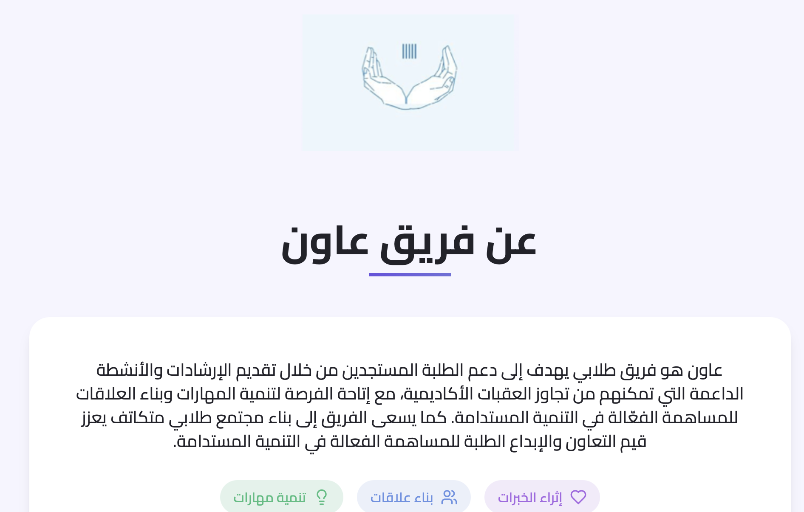
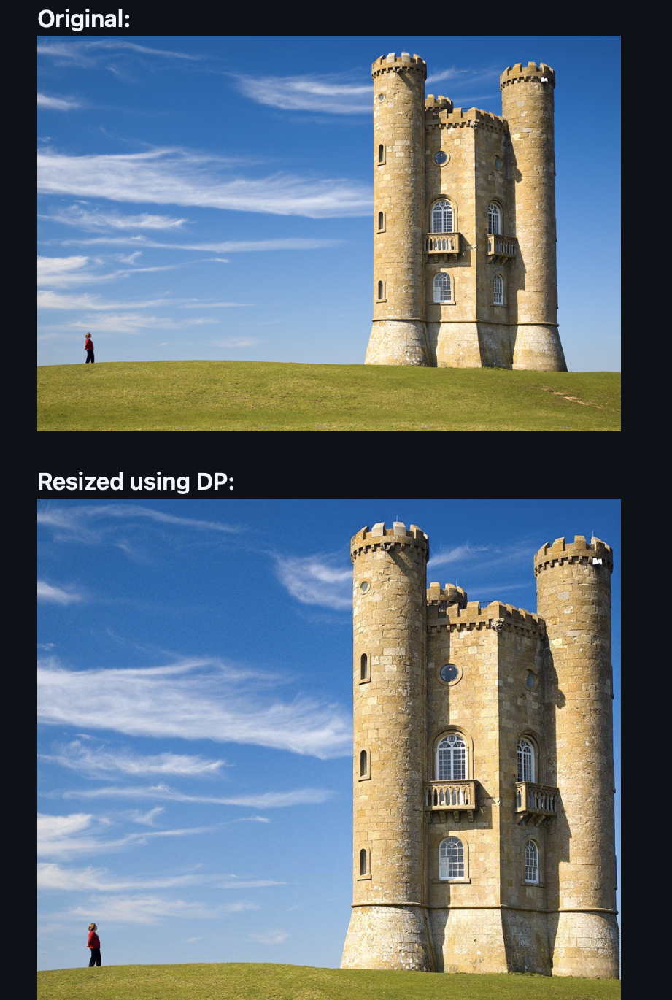

Aoun website
Contributed to designing the page flow and overall layout of the Aoun Club website as part of the technical committee

Contributed to designing the page flow and overall layout of the Aoun Club website as part of the technical committee

This project implements content-aware image resizing using the Seam Carving technique. Seam carving resizes images by intelligently removing or inserting seams—paths of least importance—preserving key visual content instead of uniformly scaling or cropping.
Date:
